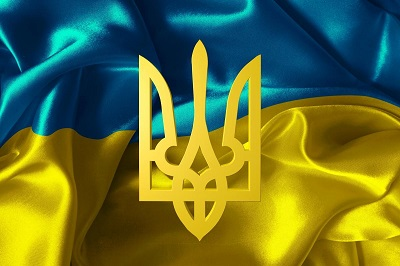
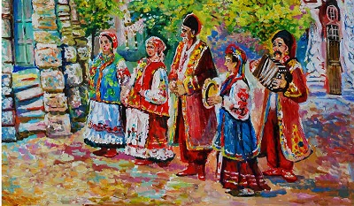
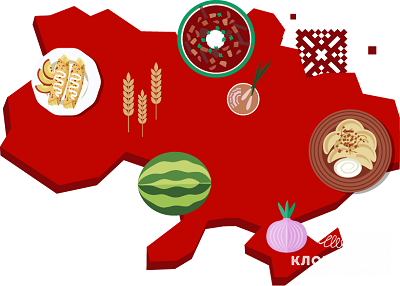
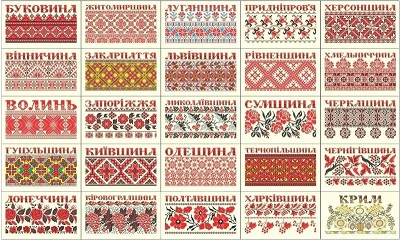

Загальна інформація
Якщо ви звернетесь до Вікіпедії щоб поцікавитися що ж таке Україна, то ви знайдете дуже багато цікавої інформації
Україна — держава у Східній та частково Центральній Європі. Охоплює південний захід Східноєвропейської рівнини, частину Східних Карпат і Кримські гори. Межує з Румунією й Молдовою на південному заході, з Угорщиною, Словаччиною та Польщею на заході, з білоруссю на півночі та з росією на сході й північному сході. На півдні омивається Чорним та Азовським морями. Площа становить 603 700 км². Найбільша за площею країна серед повністю розташованих у Європі.
Слов'янське слово «Україна» вперше згадується в Київському літописному зводі за Іпатіївським списком під 1187 роком. Ним окреслювали терени Переяславського князівства, що входило до історичного ядра Русі поруч із Київським і Чернігівським князівствами. Це слово також зустрічається в руських літописах під 1189, 1213, 1280 і 1282 роками, позначаючи Галичину, Західну Волинь, Холмщину й Підляшшя. У литовських і польських хроніках та офіційних документах XIV—XVII століття «Україною» в широкому значенні називали руські землі Галичини, Волині, Київщини, Поділля й Брацлавщини, а у вузькому — територію Середнього Подніпров'я. Таке ж двояке значення цього слова зберігалося й із середини XVII століття, після постання руської держави Війська Запорозького.
Територія України витягнута із заходу на схід на 1316 км і з півночі на південь на 893 км, лежить приблизно між 52° 20′ та 44° 23′ північної широти й 22° 5′ і 41° 15′ східної довготи.
У рельєфі України переважають рівнини (95 % усієї площі), що належать до південно-західної окраїни Східноєвропейської рівнини. Вони поєднують Поліську, Придніпровську й Причорноморську низовини, що займають 70 % поверхні України, а також Волинську, Подільську, Придніпровську, Донецьку й інші височини. Пересічна абсолютна висота рівнин становить 175 м. В Україні знаходиться найвища точка Східноєвропейської рівнини — гора Берда, висотою 515 м над рівнем моря.
Територія України лежить переважно в помірно-континентальній області помірного кліматичного поясу зі зростанням континентальности з північного заходу на південний схід. Південний берег Криму виділяється в окремий регіон субтропічного середземноморського клімату. В Українських Карпатах і Кримських горах висота місцевості й експозиція схилів зумовлюють вертикальну зональність клімату.
Не будемо переписувати Вікіпедію, ви можете перейти за посиланням, яке я лишила для вас, та почитати про клімат, заповідні зони тощо.
Про наш прапор і герб
День Державного Прапора, який наша країна офіційно святкує з 2004 року, має особливе значення для кожного з нас. За останні три з половиною роки наш прапор перетворився на загальносвітовий символ боротьби за власну свободу та життя. З нагоди свята згадуємо найцікавіші факти, пов’ язані з ним.
23 серпня 1991 року група народних депутатів унесла синьо-жовтий український прапор до сесійної зали Верховної Ради. Одним з них був В’ячеслав Чорновіл, який тоді мовив: "Мені сказали, що на вулиці є той прапор, з яким українці стояли на барикадах. Я прошу, щоб саме цей прапор був встановлений у нашому залі. І ще я пропоную, щоб до того, як ухвалимо рішення про національну символіку, про національний прапор, наш прапор був піднятий над куполом верховної Ради".
З 18 вересня під синьо-жовтим прапором починають зустрічати іноземних гостей, складати присягу військовослужбовці, працювати посольства України, його вивішують в ООН.
Сучасний синьо-жовтий прапор уперше публічно зафіксовано у Львові ще в 1848 році, але важливо пам’ятати, що саме ці кольори використовували на гербах руських земель, князів і шляхти ще в період раннього середньовіччя. Кольори прапора походять від герба Галицько-Волинської держави.
Офіційні відтінки українського прапора за версією Pantone: Pantone Coated 2935 C та Pantone Coated Yellow 012 C.
Найбільший прапор України 30 на 45 метрів (1350 м²), занесений у Книгу рекордів України, спершу створили в Донецьку у 2007 році, потім прапором-рекордсменом став стяг, який розгорнули в Бахмуті (теж Донецька область) — його площа вже дорівнювала 2400 м². А найдовший прапор виготовили в Тернополі. У 2010 році там розгорнули знамено завдовжки 9,5 км та завширшки 0,75 м. Цієї довжини вистачило, щоби оточити весь Тернопільський став.
Українські "кіборги", які захищали Донецький аеропорт, попри постійні обстріли, регулярно вивішували український прапор над диспетчерською вежею, поки її остаточно не підірвали.
У 2016 році українські альпіністи встановили прапор на вершині найвищого вулкана світу — Охос-дель-Саладо (6872 метри), цього ж року Ірина Галай стала першою українкою, яка зійшла на Еверест, Вершину Миру. Синьо-жовтий стяг був із нею.
На початок сторінкиПро наші пісні
Душа українців у щирих рядках
Немає жодної події з життя чи побуту, які б не були описані в чарівних в текстах про Україну. Наш народ оспівував усе, що бачив, чув, відчував: вишитий рушник оберіг, сонце, зорі, квіти, тварин, мальви, війни проти ворогів, хвилювання наречених перед весіллям, жнива, кріпацькі поневіряння – кожна життєва подія описана по-своєму, унікально, хоча часто зустрічаються схожі мотиви.Особливу любов викликає багряний символ держави – калина, її згадують у багатьох популярних піснях. Найвідоміша серед них - «Ой у лузі червона калина», насправді, авторська пісня, написана Степаном Чарнецьким. Поет написав її до п’єси-опису життя славетного гетьмана Дорошенка, але слова і музика так припали людям до душі, що стала справжнім гімном січових стрільців та поповнила скарбницю національної культурної спадщини.
Народні пісня у виконанні відомих українців
Найбільше цінують народну творчість вимушені переселенці, розкидана по всьому світу діаспора. В далеких краях нащадки мужніх козаків і вродливих козачок плекають, бережуть кожну крихту спогадів про Україну. Яскравий приклад – відома американська українка Квітка Цісик, яка співала авторські й народні пісні в сучасній обробці. В її репертуарі були такі чудові композиції, як: «Пісня про рушник», «Ой не світи місяченьку», «Ой, верше мій, верше» тощо.
Популярне в радянські часи тріо «Мареничі» по-своєму інтерпретували творчість предків. Вдалий гітарний супровід доповнив магію давніх текстів про любов. Їхнє виконання твору «Чом ти не прийшов» входить у перелік найвідоміших сучасних обробок.
Зірка сербсько-українського походження Міла Йовович теж полюбляє народні пісні про кохання. Ніжний голос голлівудської акторки витончено та лірично звучить в українських піснях. Лірична українська композиція звучить як колискова, яку співала спершу невільниця, а згодом дружина султана Сулеймана Роксолана-Хюррем серіалі «Величне століття».
Не можна не згадати визначного оперного співака - Дмитра Гнатюка, його спів пронизаний надзвичайним магнетизмом у творі про любов «Ніч яка місячна». «У сусіда хата біла», «Вівці мої, вівці» стали класикою незвичного досі оперного виконання витворів народного музичного мистецтва.
Серед сучасних виконавців, які із задоволенням виконують українські народні пісні, слід відзначити Олександра Пономарьова, Ніну та Тоню Матвієнко, Оксану Білозір, Марійку Бурмаку, ILLARIA, гурти Піккардійська Терція та MAD HEADS. Вони популяризують слова і музику нашої нації, плекаючи, любов до культурного спадку серед молодого покоління.
Класифікація пісень України з часів козаччини до сьогодення
Як виникає справжня народна українська пісня? Спочатку слова й музика ллються з серця одного автора, потім їх підхоплюють десятки, сотні вуст. Мелодія змінюється, слова варіюються, а першоджерела творів про маму, кохання, біль, героїчні подвиги губляться у далекому історичному минулому. Залишається тільки весела або сумна мелодія, щира, правдива, просякнута духом простих людей.
Є десятки видів українських народних пісень, нижче наведені найпоширеніші серед них:
- За періодом в історії:
- Кріпацькі
- Чуумацькі
- Козацькі
- Рекрутські
- Емігрантські
- Стрілецькі
- Обрядові:
- На заручини
- Весільні
- Веснянки
- Купальські
- Щедрівки
- Колядки
- Побутові - про важке життя селян і панщину, про кумів і сватів, жартівливі і колискові.
- Ліричні - про щасливе й нещасне кохання.
- Героїчні подвиги народних улюбленців - гетьманів, керівників повстань, опришків.
- За географічним виникненням
Про нашу кухню
Українська кухня
З яким словом у вас асоціюється українська кухня? Всі ці пишні пампушки, ароматне сало, соковите м’ясо з печі, картопля з зеленню, що парує … Смачна, ситна, цікава, самобутня … Все це вірно, але не дозволяє до кінця сформувати уявлення про українську кухню. Щедра – ось найбільш точне слово для неї. Столи, які ломляться від домашніх страв і закусок, ледь гість переступить поріг будинку господині, відповідні оригінальні рецепти до кожного свята. Млинці на Масляну, 12 страв на Різдво, яблучні пироги в честь свята Спаса. І це лише мала частина святкових українських традицій.
Українська кухня ситна і різноманітна. В її основі лежать м’ясо, зокрема, свинина, сало, різноманітні овочі. І ще одна візитна картка української кухні – це випічка та вироби з тіста. Історія України дуже багата. І вона знайшла відображення в кулінарії. Українці завжди займалися сільським господарством, працювали на полях і городах. Страви, які готували сім’ї, були з того, що було під рукою. Вони були наваристими, поживними і часто навіть жирними, щоб наповнити людей силами і витривалістю.
Рецепти української кухні
В нашій країні дуже рано проявилася професія кухаря як окреме ремесло. Ще при перших монастирях були певні монахи, які займалися виключно приготуванням їжі. Пізніше такі кухарі з’явилися і в будинках заможних сімей, і у знаті. Саме завдяки такому розподілу праці формувалася багата і різноманітна українська кухня. Готування їжі перетворилося на справжнє ремесло, яке розвивалося, удосконалювалося і перетворювалося в мистецтво. Завдяки монахам-кухарям з’явилося безліч традиційної релігійної випічки і святкових рецептів.
Незважаючи на різноманітність домашньої худоби, а також дичини і риби в лісах і річках, м’ясні страви вважалися святковими. У звичайні дні подавали страви з овочів, тіста і молочних продуктів. Саме тому овочеві страви і різноманітна випічка так сильно розвинені в українській кухні. Рецепти з овочів включають в себе велику кількість інгредієнтів, завдяки чому є дуже смачними й незвичайними.
Також окреме місце в українській кухні займає картопля. Її відварюють, запікають з салом, подають зі шкварками або зеленню, з нею готують пироги та вареники, деруни, зрази. Вона, нарівні з хлібом і кашами, є одним з головних гарнірів в українській кухні.
Популярні страви української кухні:
- Борщ
- Вареники з різними начинками
- Холодець
- Пампушки
- Галушки
- Вергуни (аналог хмизу)
- Печеня
- Домашня ковбаса
- Млинці (налисники)
- Січеники
- Сало солоне та інші закуски з сала
Напої української кухні
Багатством відрізняються не тільки страви української кухні, а й напої. Серед них всілякі узвари – корисні і солодкі компоти із сухофруктів або ягід. До речі, узвар також є традиційним представником різдвяного столу. Дуже популярні в українській кухні напої, які виходять шляхом бродіння – квас, меди, пиво. З тих пір, як в Україні прижився буряк, цукор став невід’ємною частиною кулінарії. Збільшився асортимент не тільки десертів, але і напоїв. Горілка, наливки, варенуха, вино і різні настоянки подаються на багатий український стіл в такому ж достатку, як і страви.
Не дарма українська кухня так популярна в усьому світі. Вона щедра, багата, різноманітна. У кожному рецепті відчувається українська душа, відображається наш менталітет і гостинність, сердечне тепло, з яким в українців прийнято зустрічати гостей. Якщо ви ще цього не зробили, то вам потрібно обов’язково познайомитися ближче з українською кухнею. Вона варта того! Спробувавши національні страви, ви не зможете їх забути, і назавжди збережете в собі частинку українського тепла і привітності разом з нашими традиційними рецептами!
На початок сторінкиПро нашу вишиванку
Історія української вишиванки
Витоки української вишиванки сягають раннього середньовіччя, періоду правління Київської Русі (IX-XIII ст.). Спочатку він був практичним, прикрашав одяг і предмети побуту простими геометричними візерунками. Впливи візантійської та східнослов’янської культури відіграли ключову роль у формуванні ранньої техніки вишивання.
З плином часу (у XV-XVII ст.), вишиванка перетворилася на щось більше, ніж просто прикрасу. Вона набула глибокого та символічного значення.
В буремні часи (XVIII-XIX ст.) правління Речі Посполитої, Австрійської імперії чи Російської імперії, Україна та її культура зазнавали утисків. Вишиванка стала важливим засобом збереження культурної самобутності та національної ідентичності. Навіть у важкі часи український народ виражав свої почуття та бажання через унікальні візерунки на вишиванці.
У радянський період, і коли Україна була частиною Радянського Союзу, національна культура України обмежувалася під страхом смерті. Тим не менш, вишиванку продовжували носити з гордістю, як символ мовчазного опору та збереження української ідентичності в умовах репресій. Хоча варто визнати, що саме в цей період українська традиційна вишиванка зазнала чи не найбільшої біди, оскільки саме тоді було знищено незліченну кількість автентичних вишитих скарбів, створених українськими майстринями, а носіння вишитого одягу могло стати вироком для власника. Та, попри все, українську вишиванку вдалося зберегти, як і традицію її носити, а зараз вона переживає чи не найпрекрасніший етап відновлення і вивчення.
Символіка та значення орнаменту вишиванки
Українська вишиванка, прикрашена складними візерунками та яскравими кольорами, — це не просто одяг, а полотно, насичене символікою та культурним значенням. Кожен вишитий мотив, стібок і відтінок несе в собі історію, переплітаючи нитки традицій, духовності та національної гордості, і зараз ми спробуємо дослідити її глибокий символізм і значення орнаменту української вишиванки. Отже:
- Палітри кольорів вишиванок – це візуальна мова, яка передає спектр емоцій та смислів. Червоний, символізуючи пристрасть і життя, відображає життєву силу власника. Чорний служить свого роду захисним щитом від злих сил, а білий уособлює чистоту і світло. Поєднання кольорів в орнаменті відображає гармонійне поєднання емоцій і культурних цінностей.
- Геометричні форми візерунків ретельно вишиті на тканині - це візуальна поезія вишиванки. В орнаменті часто помітне місце займають кола, трикутники, ромби. Кола представляють циклічність життя та вічності, трикутники можуть символізувати Святу Трійцю, а ромби можуть позначати рівновагу та гармонію. Геометрична точність посилює глибину символічної мови вишиванки.
- Квіткові візерунки у вишиванках поширені в українському орнаменті. Ці мотиви не просто декоративні; вони часто несуть глибокий зміст. Різні квіти можуть символізувати різні сторони життя, природи, людських емоцій. Наприклад, незмінно популярна «ружа» (троянда) асоціюється з любов’ю, красою та процвітанням, тоді як «маки» можуть означати пам’ять і стійкість.
- Зображення птахів та тварин доповнюють символічну мову вишиванки. Птахи, такі як голуби, часто асоціюються з миром і свободою, тоді як міфічні істоти, такі як «жар-птиця», можуть символізувати вічний цикл життя, смерті та відродження. Вибір тварин в орнаменті відображає зв'язок із природою та фольклором.